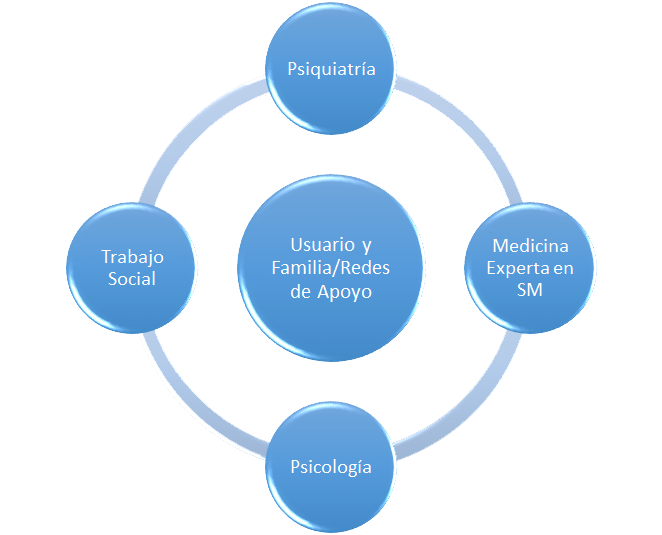
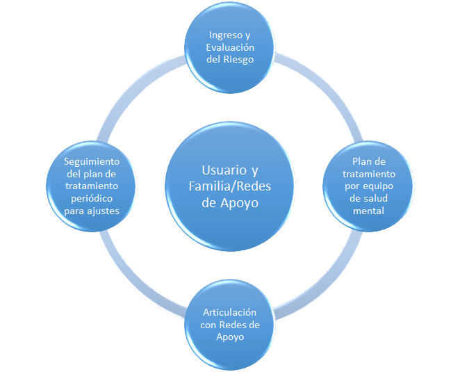

Es una entidad prestadora de servicios de salud, especializada en
la atención ambulatoria de salud mental. Con más de 2.000
pacientes manejados de manera satisfactoria en el departamento de
sucre. Somos una entidad especializada en el la Rehabilitación de
Adicciones por sustancias psicoactivas.
Contamos con un modelo de atención integral en Salud Mental; el
cual es interdisciplinario el cuál está liderado por el médico
especialista en Psiquiatría, acompañado por médico general experto
en salud mental, psicólogos y trabajadora social.

Este Modelo de Atención está dirigido a pacientes:
-
💠 Pediátricos y adultos con Riesgo de presentar Alteraciones de
Salud Mental.
-
💠 Pediátricos y adultos con Patologías desarrolladas y/o
adquiridas de salud mental.
-
💠 Cuando el usuario ingresa al programa de salud mental, es
caracterizado de acuerdo al Riesgo, es diagnosticado y se le
define un plan integral de tratamiento.
Las patologías que atendemos
- 💠Depresión
- 💠Ansiedad
- 💠Cualquier tipo de adicción tóxica y no tóxica.
-
💠Alteraciones de salud mental por consumo de sustancias
psicoactivas
- 💠Esquizofrenia.
- 💠Psicosis